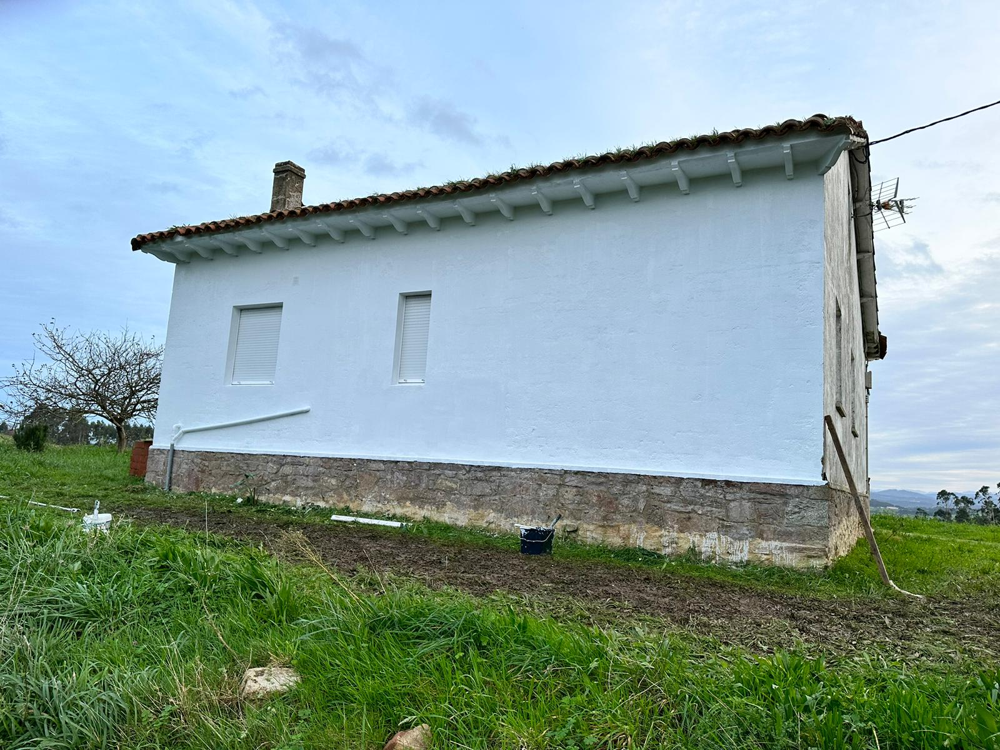
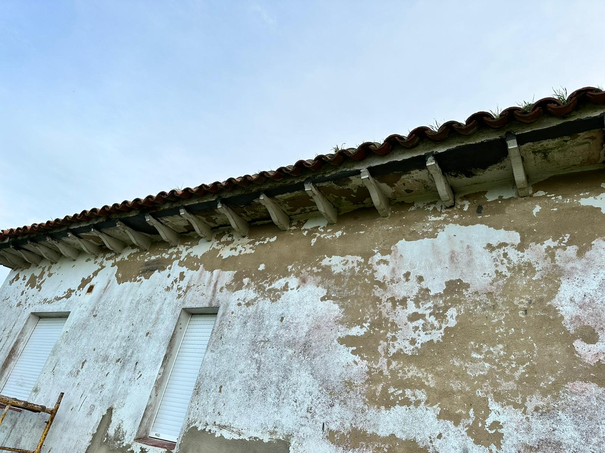
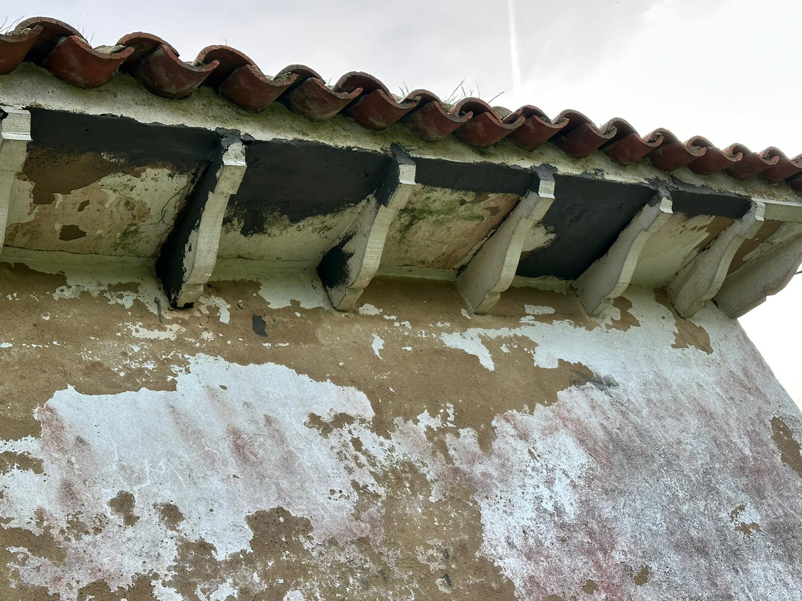
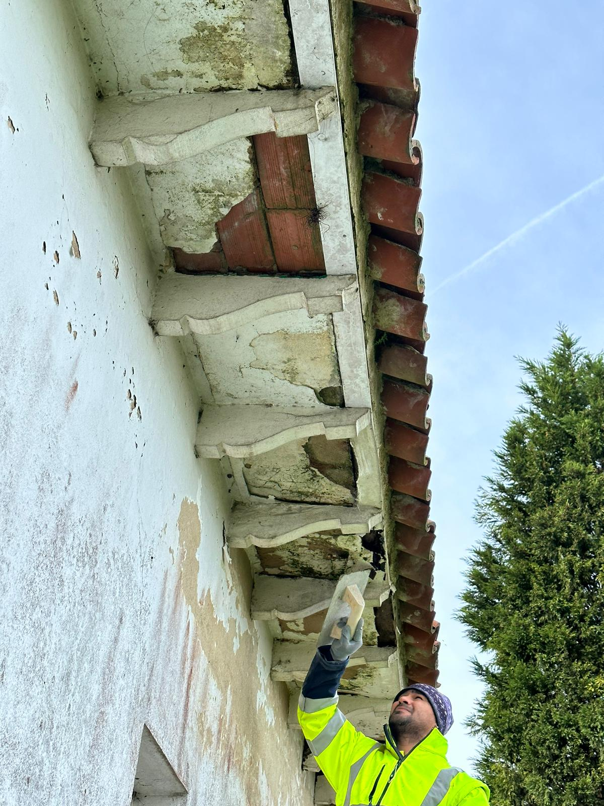
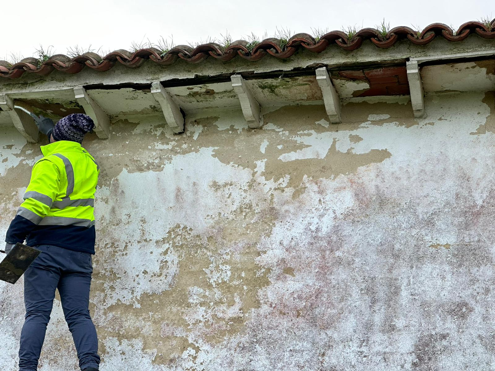
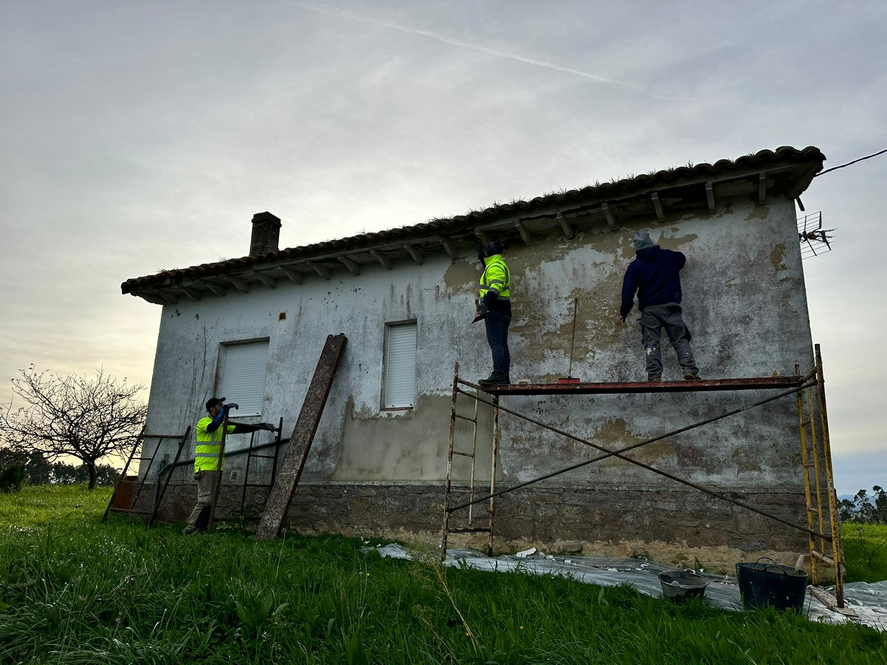
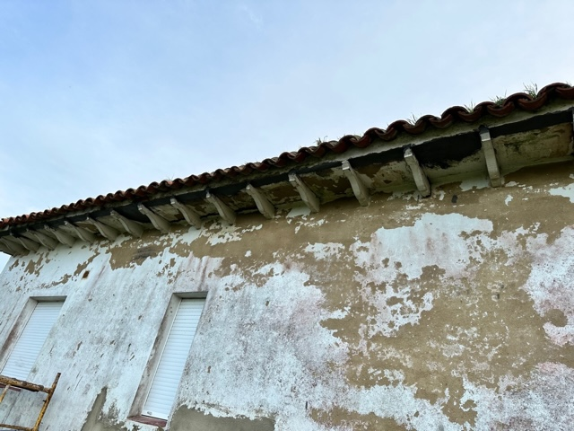
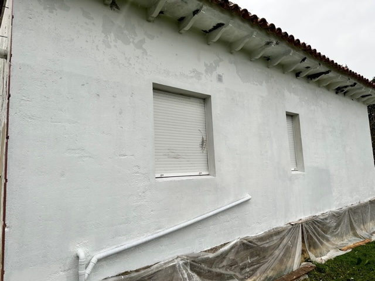
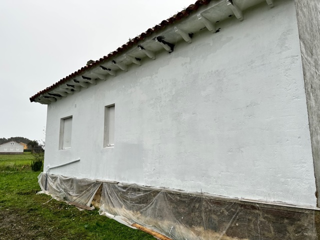
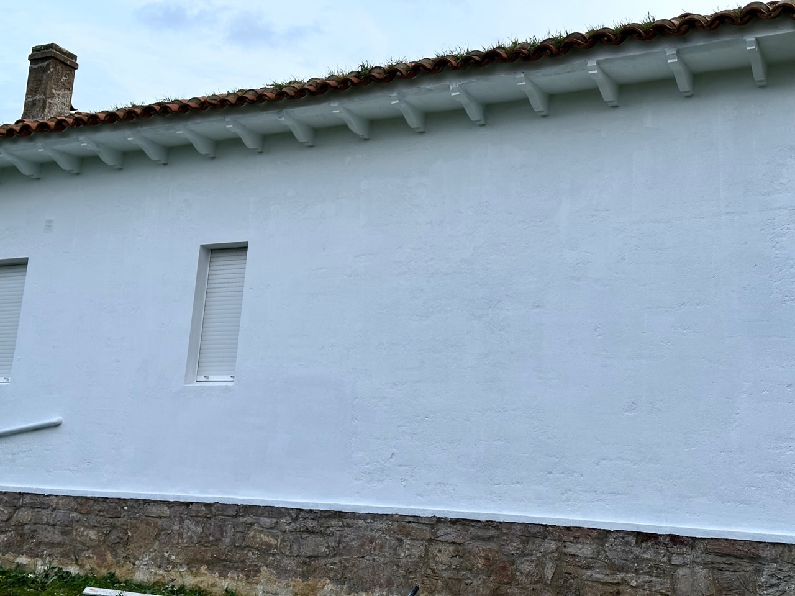

@@include('header.htm')
@@include('blocks/navigation-1.htm')
@@include('blocks/page-header.htm', {"title": "Project", "prevpage": "Project", "currentpage": "Projects Single"})

<section id="main-container" class="main-container">
  <div class="container">

    <div class="row">
      <div class="col-lg-8">
        <div id="page-slider" class="page-slider small-bg">
          <div class="item">
            
          </div>

          <div class="item">
            
          </div>
          <div class="item">
            
          </div>
          <div class="item">
            
          </div>
          <div class="item">
            
          </div>
          <div class="item">
            
          </div>
          <div class="item">
            
          </div>
          <div class="item">
            
          </div>
          <div class="item">
            
          </div>
          <div class="item">
            
          </div>
        </div><!-- Page slider end -->
      </div><!-- Slider col end -->

      <div class="col-lg-4 mt-5 mt-lg-0">

        <h3 class="column-title mrt-0">Proyectos de rehabilitación de fachada en vivienda rústica</h3>
        <p>Colaboramos con profesionales de la zona que gracias a su larga experiencia en el correcto tratamiento de los materiales y las técnicas de construcción tradicionaes.<br>
        En Inmotech perseguimos el lucimiento la conservación de las estructuras y la conservación de los materiales, a fin de dar una nueva vida a las fincas rústicas.
        </p>

        <ul class="project-info list-unstyled">
          
          <li>
            <p class="project-link">
              <a class="btn btn-primary"  href="projects.html">Volver a proyectos</a>
            </p>
          </li>
        </ul>

      </div><!-- Content col end -->

    </div><!-- Row end -->

  </div><!-- Conatiner end -->
</section><!-- Main container end -->

@@include('footer.htm')